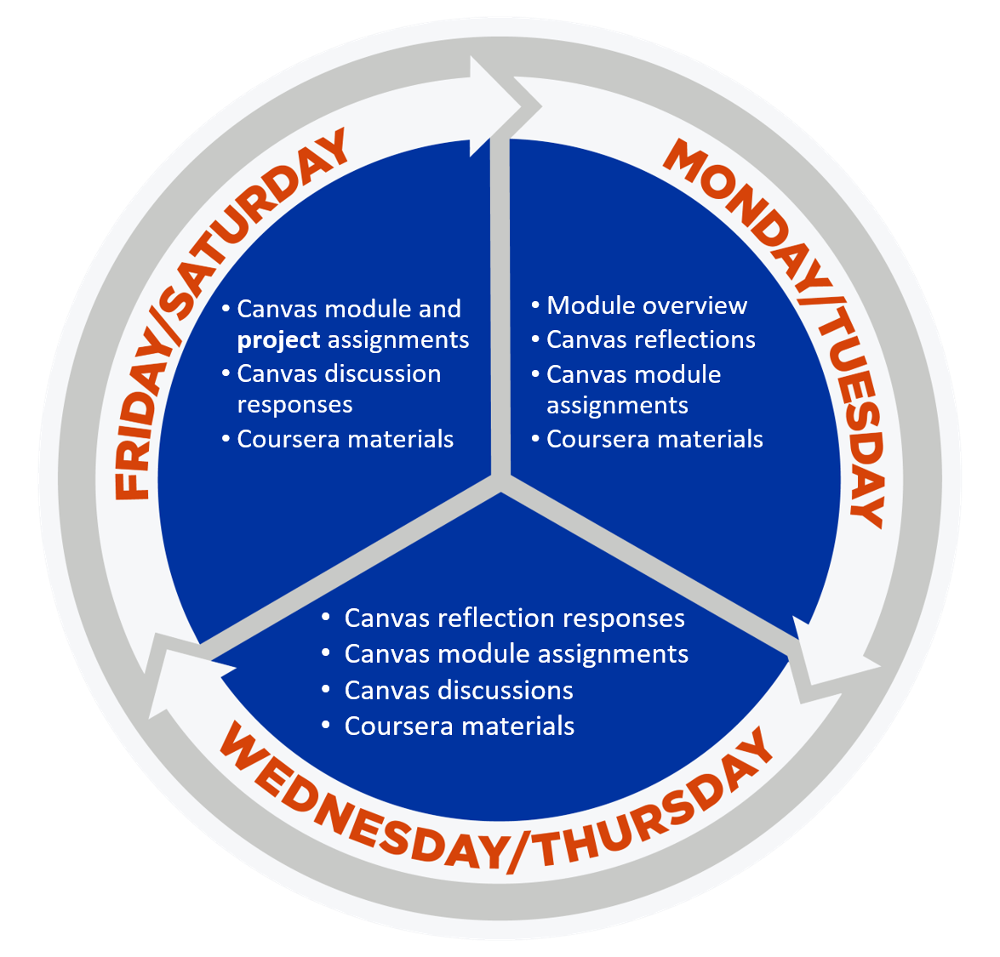

Project managers are natural problem-solvers who lead projects, work with people, and deliver value within an organization. In this course, you will learn foundational project management terminology and gain a deeper understanding of the role and responsibilities of a project manager. You'll learn how to create effective project documentation and artifacts throughout the various phases of a project. You'll gain an immersive understanding of the practices and processes used by project managers to lead, plan, and implement critical projects to help their organizations succeed.
As part of this course, you will complete the first three courses in the Grow with Google Project Management certification.
Learning project management skills and tools will set you up for success, whether or not your title is Project Manager. In addition to learning the skills and tools to effectively manage projects, you will also build essential communication and leadership skills that will enhance your performance and value in the workplace.
To see how these course learning objectives map to the course modules and assignments, see the Course Roadmap.
As your instructor, I hope you will be excited about this area of study and gain valuable skills for your career journey. Curiosity is an asset in many roles, including Project Managers, so please engage with me and with your classmates to ask questions, learn all you can, and enjoy the journey to earning your Google Career Certificate.
The information provided below will help you identify resources you need to succeed in this course and describe how the course operates in Canvas. If this is your first experience in a fully-online course, you might want to check out some frequently asked questions about online courses.
For questions about this course, use the Course Questions discussion board.
Please Note: If your question is related to a grade you have received or other personal matter, do not post it in course discussion boards. Instead, contact me directly.
While there are no prerequisites for this course, you will need to have some basic computer skills and access to basic technology to be successful.
This class is “asynchronous” -- there are no meeting times, but there are due dates throughout the week. There are seven one-week modules to be completed online. Most modules have Coursera assignments, reading/writing assignments, quizzes, discussion, and reflections. It should take you approximately 16-19.5 hours per week to do all of your work, which will be submitted using Canvas.
Due dates throughout the course land on Tuesday, Thursday, and Saturday; all your work needs to be submitted by 11:59 p.m. Mountain Time.

Spacing due dates throughout the week is designed to break the work into manageable chunks, making it easier to interact with other students and stay on track in the course. I am here to help you each step of the way.
If you feel you can no longer participate and complete the course, you may need to drop or withdraw. If you drop the course (by the drop date) it will not show up on your transcript and you can get a refund (minus a fee). If you withdraw from the course (by the withdrawal date), it will show on your transcript and you will not get a refund, but the course will not be counted in your GPA. The last day to drop comes quickly! Review the Boise State Academic Calendar to find the dates for each for this semester. Also, be sure to read about the impact of enrollment on financial aid.
Each assignment in the course (listed below) is designed to move you closer to the overall learning objectives, or goals for the course.
Should you find inspiration in others' ideas or writing on this subject, be sure to cite them so I can understand which ideas and writing are your original work and what sources you used. I highly recommend that you take notes in your own words instead of copying and pasting from the original source with the intent of going back to edit later.
The course has several lower-stakes assignments throughout the course to help you build your knowledge and understanding. Also, you will work on a larger project throughout the semester that will result in a document that you can share with potential employers to demonstrate your capabilities and thought process.
Here’s an overview of each activity and how many points they’re worth. To pass the course, you must earn at least 70% of the points in each activity category to pass the course.
|
Activity |
Brief Description |
Points |
|---|---|---|
|
Discussions |
Discussions allow you to reflect on key concepts, scenarios, and choice points in order to apply what has been learned from course materials to real-world challenges |
50 |
|
Assignments |
Assignments allow you to apply what you’ve learned in the Coursera to deepen understanding and grasp of the content and establish your connections to industry |
67 |
|
Coursera |
Work completed on the Coursera platform |
230 |
|
Project |
Project assignments allow you to apply key concepts to real world challenges and develop artifacts that can demonstrate and showcase skills to potential employers |
250 |
|
Reflections |
Reflections allow learners to make informed judgements about what they see and hear. Responses provide insight into learners' understanding of the content and progress in the course |
30 |
|
-- |
-- |
Total Points 627 |
Final letter grades will be based on the following scale. Regardless of the total percentage for the course, you must earn at least 70% of the points in each activity category to pass the course (see list above).
| Total Points | Percentage | Letter Grade |
|---|---|---|
| 608-627 | 97 - 100 | A+ |
| 583-607 | 93 - 96.99 | A |
| 564-582 | 90 - 92.99 | A- |
| 545-563 | 87 - 89.99 | B+ |
| 520-544 | 83 - 86.99 | B |
| 502-519 | 80 - 82.99 | B- |
| 483-501 | 77 - 79.99 | C+ |
| 458-482 | 73 - 76.99 | C |
| 439-457 | 70 - 72.99 | C- |
| 420-438 | 67 - 69.99 | D+ |
| 395-419 | 63 - 66.99 | D |
| 376-394 | 60 - 62.99 | D- |
| 0-375 | 00 - 59.99 | F |
I do my best to provide clear expectations and grading criteria for your assignments. That means:
Regrading assignments: Assignments will not be regraded unless I've made an error. If you think a grade is in error, notify me within 7 days of the grade being posted. After that, grades are final.
You can earn points for addressing the feedback you receive each week on your project. Review instructions, grading rubrics, and feedback to make sure you earn the most points possible.
All due dates are in Mountain Time. Your work is late when it is submitted anytime after the published deadline. Late assignments incur a point penalty of 5% per day late.
Assignments that are late by 7 or more days are ineligible to receive points for responses or for incorporating feedback. Examples of such assignments are Reflections, Discussions, and Project work.
Note: This course employs two online learning sites, Canvas and Coursera. Ignore all due dates in Coursera - Canvas is the system of record for course deadlines.
It’s always best to submit work on time, but I understand that sometimes things can happen that are out of our control. Please contact me ahead of assignment deadlines if issues arise.
An incomplete grade (I) is assigned only at my discretion, and is used to indicate that you have made satisfactory progress up to the last two weeks of the semester, but for extenuating circumstances, you have not been able to complete the course by or before the end of the semester. Incomplete grades not completed by the end of the contract period (or a maximum of one year) will result in a failing grade (F) on your transcript. For more information on this policy, see the Office of the Registrar Grades page.
I recognize that students come to class with a broad range of experience and knowledge...
If there is something going on that is preventing you from being successful in the class, please let me know or contact one of the support services.
I want you to achieve at your highest capacity in this class. If you have a disability, I need to know if you encounter inequitable opportunities in my course related to:
Every effort has been made to make this course accessible. However, students with disabilities who may need accommodations to fully participate in this class should contact the Boise State Educational Access Center (EAC). All accommodations must be approved through the EAC prior to being implemented.
Please review Coursera's accessibility statement for information about Coursera's accommodation options.
Boise State cares about you! You can find many kinds of help, including technical, academic, financial, life needs, learning accommodations, and much more. These resources have been gathered into one convenient document for you to keep on hand. Almost all of the student services on campus are also available to online students. Make sure to take a look at the University Support and Policies document.
If you have an approved accommodation through the EAC, please notify me as early as possible in the course so we can ensure everything is in place for your success.
If at any point during the course you believe an accommodation is not being met, you are expected to communicate this to me right away so we can address it promptly. Timely communication is essential. Accommodations are most effective when they are implemented and adjusted in real time. Concerns raised after assignments are completed or at the end of the course limit the ability to make appropriate adjustments.
I want to see your thinking, understand your reasoning, and hear your voice. Your ideas, reflections, and project work should reflect your authentic engagement with the material. That said, there are moments where AI tools can help you deepen your learning and extend your thinking.
You are welcome and encouraged to use generative AI in thoughtful, ethical ways. When used well, AI can act as a thought partner, editor, and feedback tool. When used poorly, it can short-circuit the learning process.
If the assignment doesn’t already tell you how to document your AI use, include a short note explaining what tool you used and how it helped. You do not need a full citation unless you’re directly quoting or reproducing something from the AI output.
Example:
Used ChatGPT to generate counterarguments after outlining my position. Selected and reworded two points to strengthen my conclusion.
That’s totally fine. If you’d prefer to complete this course without using AI tools, just reach out—I’ll help you make a plan that works for you.
If you're not sure when or how to use AI, ask me! This is a learning environment, and that includes learning how to engage with emerging technologies responsibly. I'm always happy to talk about how I'm using AI to improve this course (e.g., testing assignment clarity, stress-testing rubrics), and to hear how you're using it too.
Let’s make this a space where we all learn together.
When you graduate from Boise State, we want you to feel confident that your paper diploma represents strong skills, abilities, and knowledge that you developed through your coursework. This is academic integrity. Want to learn what might be considered academic misconduct? Consider reviewing some examples in Section 8 of the Student Code of Conduct
Academic integrity is everyone's responsibility. I take academic misconduct like cheating and plagiarism very seriously because it prevents you from learning the content. It’s important to know that if you submit work containing academic misconduct, you may face a grade sanction ranging from ‘revise and resubmit’ up to receiving a failing grade in the course. Also, I will report the incident to the Office of the Dean of Students. Students can and should learn more by reviewing the Student Code of Conduct.
Please review Boise State's Academic Integrity resources for students for more information.
Did you know that you own copyright in your original papers and exam essays? If I am interested in posting your answers or papers on the course website, I will request your written permission before I do so.
Similarly, my lectures and course materials, including presentations, tests, outlines, and similar materials are protected by copyright. Here are some guidelines to use:
Under Idaho law (Section § 67-5909D), some university courses with content related to diversity, equity, inclusion, or critical theory may be subject to certain restrictions. However, the law affirms and does not limit free discussion in the learning environment. Like all Boise State courses, this course supports open inquiry, intellectual honesty, and respectful engagement with a range of perspectives, all of which are consistent with student rights and responsibilities described in the Student Code of Conduct (Policy 2020).
This course may include content that touches on concepts related to diversity, equity, inclusion (DEI), or critical theory—such as systemic inequality, cultural identity, or gender and race in society. If these topics are included, it is because they are relevant to the learning outcomes for this course and are explored to support critical thinking, deeper understanding, and respectful engagement with different perspectives. As part of the course, you may be asked to apply or explain ideas that come from a particular perspective. However, you are not required to adopt such perspectives as your own.
Our learning environment is a space for open dialogue and thoughtful discussion, including complex or challenging topics. Everyone is expected to engage with curiosity, listen respectfully, and contribute in ways that support a productive and welcoming learning environment. Boise State and the Idaho State Board of Education affirm the importance of free expression and academic inquiry. As outlined in SBOE Policy III.B:
“Membership in the academic community imposes on administrators, faculty members, other institutional employees, and students an obligation to respect the dignity of others, to acknowledge the right of others to express differing opinions, and to foster and defend intellectual honesty, freedom of inquiry and instruction, and free expression on and off the campus of an institution.”
Disruptive behavior that interferes with the learning environment will not be tolerated and may result in removal from this course, in line with university policy (See Policy 3240 Maintaining Effective Learning Environments).
In this course, I will foster critical discussion and analysis, and a respectful consideration of a wide range of ideas, in accordance with the Faculty Code of Rights, Responsibilities, and Conduct (Policy 4000). You are encouraged to think critically, question ideas, and form your own conclusions. As always, you have the freedom to choose courses that align with your academic goals—if you have concerns about course content, please talk with your instructor or advisor. Refer to the academic calendar for important deadlines related to course withdrawal.
To learn more about the law and its impact at Boise State, visit this link.